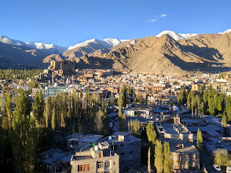

Thiksey Monastery or Thiksey Gompa (also transliterated from Ladakhi as Thikse, Thiksay or Tikse) is a Buddhist monastery affiliated with the Gelug school of Tibetan Buddhism. It is located on top of a hill in Thiksey approximately 19 kilometres (12 mi) east of Leh, in the Ladakh region of northern India.[1] It is noted for its resemblance to the Potala Palace in Lhasa, Tibet, and is the largest monastery in central Ladakh, notably containing a separate set of buildings for female renunciates that has been the source of significant recent building and reorganization.[2][3] The monastery is located at an altitude of 3,600 metres (11,800 ft) in the Indus Valley. It is a twelve-storey complex and houses many items of Buddhist art such as stupas, statues, thangkas, wall paintings and swords. One of the main points of interest is the Maitreya Temple installed to commemorate the visit of the 14th Dalai Lama to this monastery in 1970; it contains a 15 metres (49 ft) high statue of Maitreya, the largest such statue in Ladakh, covering two stories of the building.[4][5]